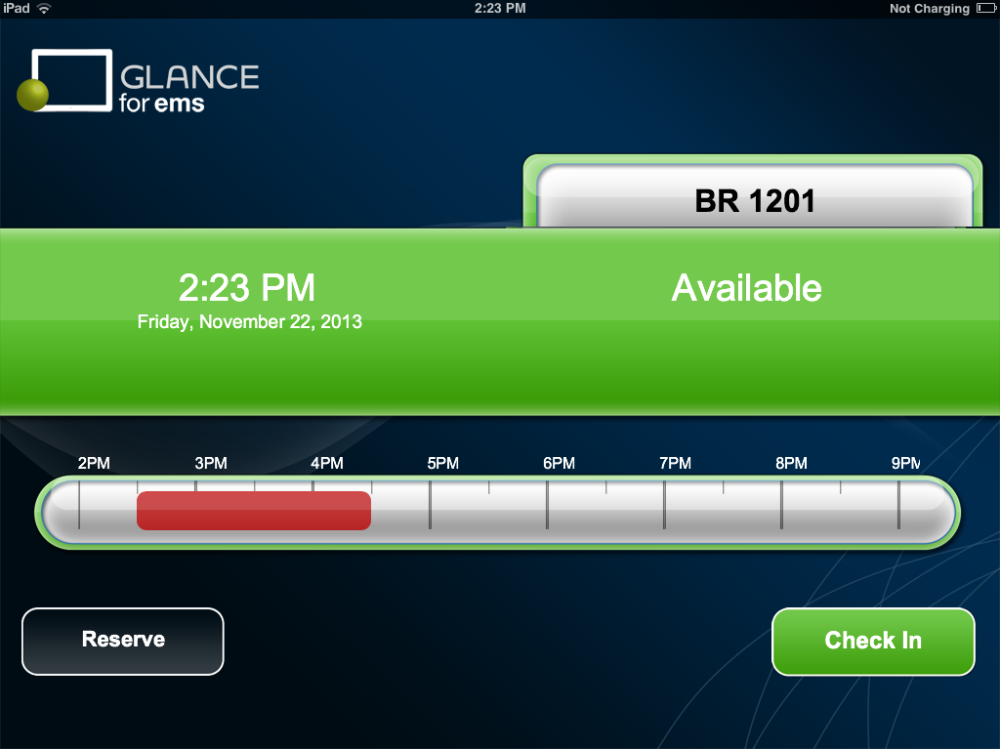
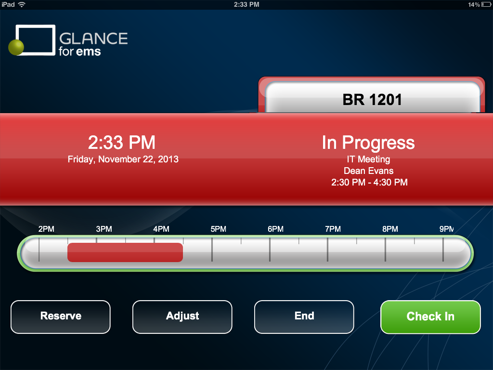

1. On the {{product_dtc}} toolbar, click EMS Glance Settings to access the EMS Glance Settings area.
 Concept: You can set how information displays at the Global level (defaults for all Profiles) or for just one Profile.
Concept: You can set how information displays at the Global level (defaults for all Profiles) or for just one Profile. 2. Then open Global Settings to set this functionality as the default for all Profiles, or open a Profile for which you wish to create a special display, and then edit the settings on the Settings tab.

3. Adjust the Global or Profile settings listed in the table below to configure how check in information displays on the following screen. The Check In functions determine check in requirements for users in EMS Glance.
|
Description |
|
If set to Yes, then a Check In button is displayed on both the Available screen and the In Progress screen. See the Available screen with Check In button and In Progress screen with Check In button. |
|
|
If the Display Check In Button is set to Yes, then this value determines how many minutes in advance of an upcoming meeting the Check In button is displayed. |
|
If set to Yes, users are required to push the Check In button to check into their meetings. If a user does not push the Check In button within the interval set in the Automatic Cancellation Interval setting, EMS Glance automatically cancels the booking in EMS. If set to No, and a user checks in before an event starts, then EMS Glance adjusts the booking start time to the current time (assuming another meeting isn’t currently in progress). If set to Yes and a user checks in before an event starts, then EMS Glance adjusts the booking start time to the current time (assuming another meeting isn’t currently in progress) and the user is checked into the meeting. If a user does not check in before the elapsed time that is defined in the Automatic Cancellation Interval setting, then the meeting is automatically canceled. |
|
|
Requires Enable Automatic Cancellation to be set to Yes. If a user does not push the Check In button for a meeting within the set interval, EMS Glance automatically cancels the booking in EMS. |
|
|
Default Status for Cancelled Booking |
The status to which a booking is changed if an event is automatically cancelled. Requires Enable Automatic Cancellation to be set to Yes. |
|
Default Cancel Reason for Cancellations |
The Cancel Reason to which a booking is changed if an event is automatically cancelled. Requires Enable Automatic Cancellation to be set to Yes. |
Available screen with Check In button

In Progress screen with Check In button

Page tags: article:topic